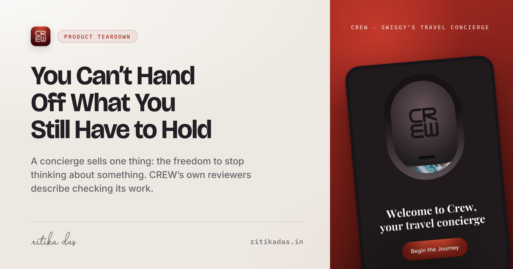

Preview check
Every image at the size it is actually seen — never at its native pixel width,
because nowhere shows it that big. The unfurls are rendered at 2x, so they stay sharp on a
retina screen when a platform hands them more device pixels than CSS pixels.
Link unfurls · crew-og.jpg
Slack · 396px
Ritika Das
You Can’t Hand Off What You Still Have to Hold
A concierge sells one thing: the freedom to stop thinking about
something. CREW’s own reviewers describe checking its work.

Card hero, in the slot it is cropped into
Mock of a Product Thinking card. The hero is
object-fit:cover into the ~400×560 media column, which is why the bloom sits low
enough to stay inside the crop.
Only CREW ships. Reddit and YouTube are marked hold in
tools/og-card.py, so no files exist for them — their subject is still a placeholder brand
tile rather than a real screenshot. Run python3 tools/og-card.py reddit to
build one and it will appear in the empty slots below.
crew-card
You can’t hand off what you still have to hold
A concierge sells one thing: the freedom to stop thinking about it. CREW’s own
reviewers verify its confirmations, chase its replies, and research the trip anyway.
reddit-card · on hold
Reddit: a waypoint, not a destination
Around 62% of Reddit’s visitors arrive from Google, land on one thread, get their
answer and leave. Reddit spends its welcome effort on a homepage they never see.
youtube-card · on hold
YouTube’s Shadow R&D Lab
Analytics only show what users do inside your app’s rules — they miss what power
users want badly enough to install third-party mods to fix.
Crop tolerance · the band the card art is built for
A card's slot height comes from its own copy, so
the aspect moves. Text sits 150px in from each edge — 35px clear of the 115px the narrowest
slot trims — so no line should clip mid-word anywhere in this range. Past 0.85 the name and
signature are the first things to go, which is why neither carries anything the rest of the
picture doesn't.